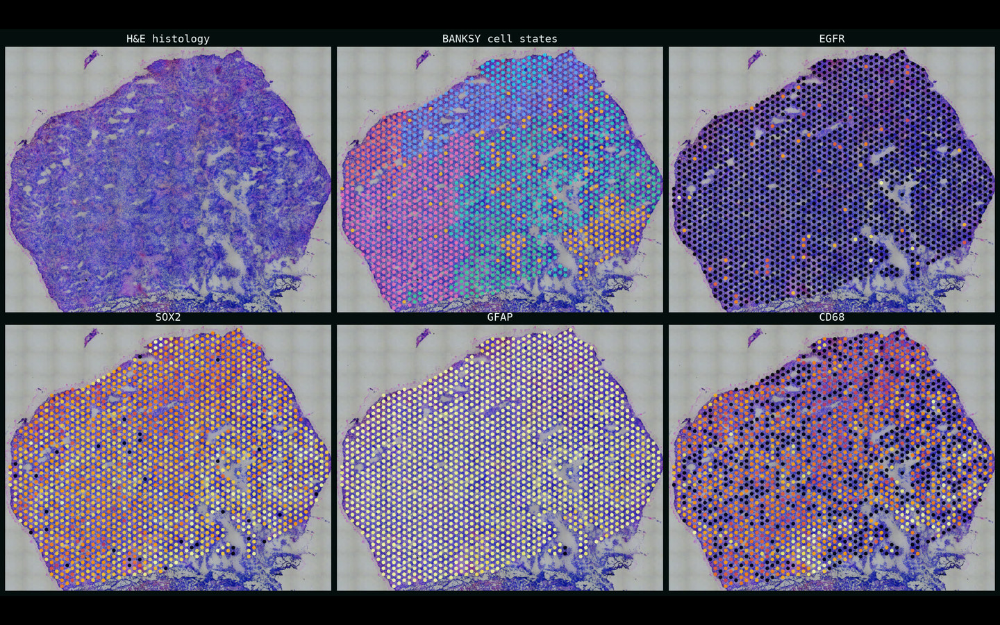

Your data has a story.
If your lab is sitting on spatial data and short on computational hands, send us a public or in-house dataset and we'll turn it around as a live portal.
computational biology, accelerated.
Every core service your lab needs.
One AI-powered team.
Spatial, single-cell and genomics analysis for labs without a bioinformatics core.
Background: 3D UMAP of 120,000 cells from the Allen Brain Cell Atlas MERFISH mouse brain (Yao et al., Nature 2023), computed by Artemis; cells drift to their positions in the brain and back.
Where our team has trained and collaborated



Custom bioinformatics report
The analysis isn’t a PDF you receive — it’s an instrument you hold. Below, 1,775 spots from a public GBM section breathe between the tissue they were cut from and the embedding that organizes them.
loading embedding…
Fig. 4 | A living figure: the same 1,775 spots glide between tissue coordinates and four UMAP parameterizations computed offline from one shared neighbors graph (fixed seed) — cell-type labels ride their clusters through the fold. One UMAP is a choice, not a fact; here you hold the dials. GBM3, Ren et al. 2023 (GSE194329); every view computed, none curated.
CUT&RUN, long reads, bulk — the same embedded team takes your assay from fastq to a browser you can hand a collaborator. The panel below is not a screenshot: it is a live igv.js genome browser streaming two public datasets into this page, opened on SOX2 — the stemness factor this site keeps meeting in tumor tissue — caught sitting on its own gene.
streaming reference + tracks from igv.org · GEO · GIAB…
Fig. 3 | Live genome browser (igv.js, hg38) at the SOX2 locus, chr3:181,695,000–181,730,000. Top track: SOX2 CUT&RUN coverage in NCI-H520 lung squamous carcinoma cells — GEO accession GSM8782600 (series GSE289046), RPKM-normalized; the ~800-RPKM peak over the gene body is the factor binding its own locus. Bottom track: PacBio HiFi Revio long-read alignments at 48× from the GIAB HG002 reference sample (NIST ftp-trace mirror, GRCh38) — single reads span tens of kilobases. Both are public datasets streamed live into the browser by HTTP range request; drag to pan, scroll to zoom.
PUBLIC MULTIPLEXED TISSUE · BIOIMAGE ARCHIVE
 ccRCC · Hoechst / MCM2 / CD3 / CD8 — composited from the study's OME-zarrBioImage Archive S-BIAD605 · Wölflein et al. · CC0
ccRCC · Hoechst / MCM2 / CD3 / CD8 — composited from the study's OME-zarrBioImage Archive S-BIAD605 · Wölflein et al. · CC0 Lung adenocarcinoma · multiplex IF whole-slide imageBioImage Archive S-BIAD1237 · Um et al. · CC BY 4.0
Lung adenocarcinoma · multiplex IF whole-slide imageBioImage Archive S-BIAD1237 · Um et al. · CC BY 4.0 Human thalamus · neuronal, vascular and glial markersBioImage Archive S-BIAD1641 · John et al. · CC BY 4.0
Human thalamus · neuronal, vascular and glial markersBioImage Archive S-BIAD1641 · John et al. · CC BY 4.0If your lab is sitting on spatial data and short on computational hands, send us a public or in-house dataset and we'll turn it around as a live portal.
For labs
Tell us your data type and question; we reply with a proposed first analysis.
Request early accessFor collaborators
A dataset, a method or a joint project. Propose it and we come back with a plan.
Suggest a collaborationTalk first
Walk us through the project and the data; leave with a concrete next step.
Book a call ↗Or email lbeharry@alumni.caltech.edu